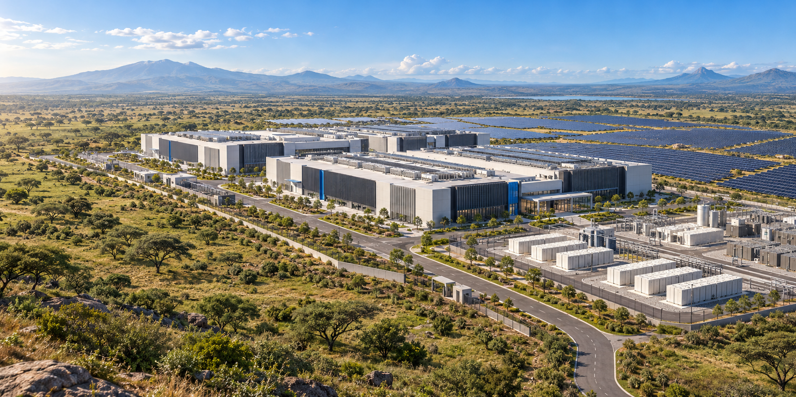
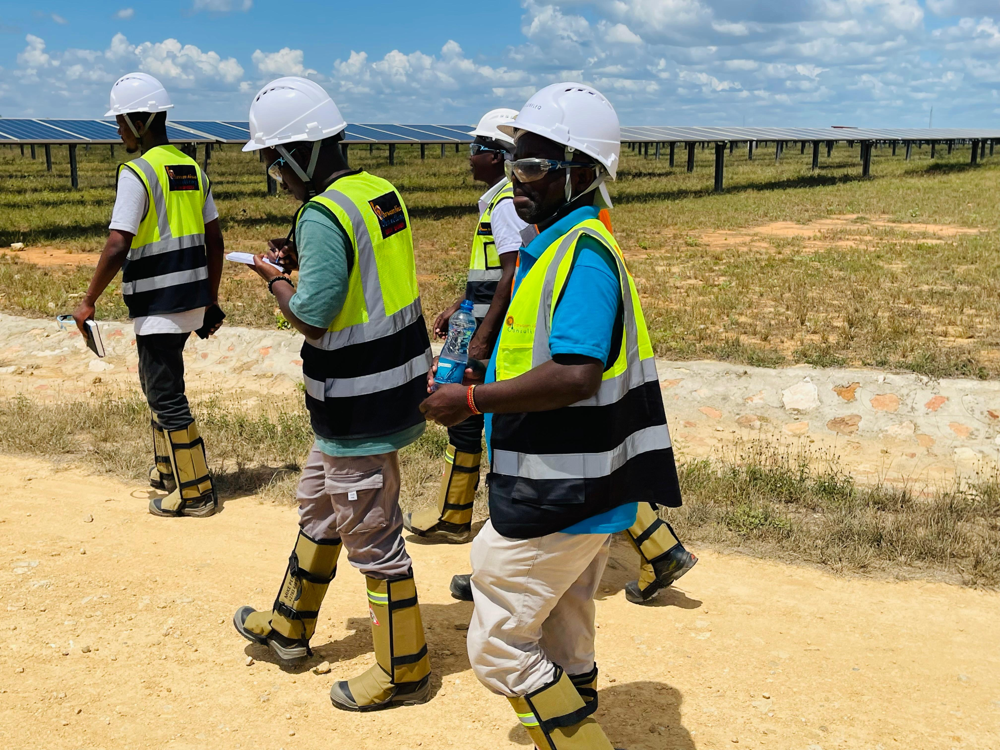

AI-ready design
Mixed rack densities, with liquid cooling (direct-to-chip or rear-door) matched to tenant equipment, so AI and GPU workloads can be hosted with confidence.
Talonex is the project company behind a proposed 150 MW green datacentre and AI infrastructure campus in Kenya.
Kenya’s businesses, public institutions and AI developers need dependable, scalable infrastructure to host critical data and run demanding compute workloads. Talonex is planning a flagship campus to meet that need in stages, with power, cooling and connectivity designed together around customer requirements.

Key operational parameters planned for the proposed Talonex development.
Final site rights and utility arrangements remain subject to completion.
Holistic infrastructure engineered around high rack density, liquid cooling pathways, and sustainable power.
Mixed rack densities, with liquid cooling (direct-to-chip or rear-door) matched to tenant equipment, so AI and GPU workloads can be hosted with confidence.
The concept combines solar PV, battery storage and two separate grid supply paths, planned as an engine-free design.
A/B critical power distribution, diverse fibre routes and carrier meet-me rooms.
A closed-loop design aims to limit make-up water, with the cooling approach chosen to suit rack density, climate and water availability.
Custom-configured infrastructure solutions for hyperscalers, governments, and regional enterprises.
Scalable space and power for cloud platforms, AI infrastructure and GPU hosting.
In-country hosting for public-sector workloads, with security and service requirements agreed per customer.
Capacity for cloud migration, business continuity and regional digital services.
We develop capacity in phases, and release it as customer demand is contracted.
Land and utility terms, environmental work, defined Phase 1 scope.
Detailed design and commercial agreements.
Approved financing and construction oversight.
Integrated testing, customer acceptance and phased growth.
Talonex intends to build environmental and social considerations into the project from the start: efficient use of energy and water, site-specific environmental and social assessments before construction commitments, and local participation through procurement, training and skills transfer.

Through Barwasim Africa Consulting Ltd’s partnership with SIC, Talonex draws on experience from Project Savanna, a 100 MW development in Konza Technopolis covering campus phasing, power-supply assessment, and institutional and utility coordination.
Konza Technopolis Coordination